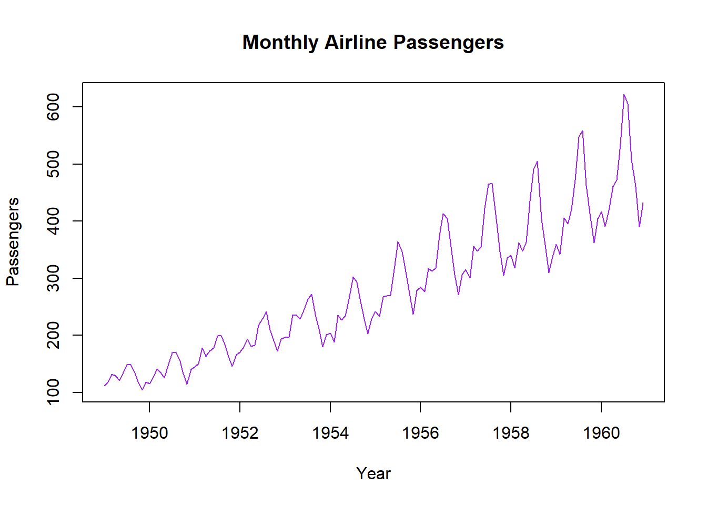
Lecture 5 Workthrough
Moving Average and Auto regressive models
Basic Introduction
First we will look at the AirPassengers dataset:
Clearly there is an upward trend with strong yearly seasonality and increasing variance. So we can conclude that this series is definitely not stationary.
Now we will inspect the Nile dataset:
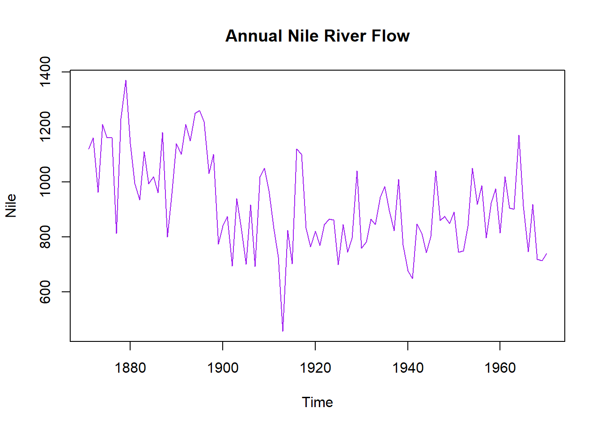
This time series looks like it could be stationary but we cannot be 100% sure based on visual inspection. So we will use the adf test to check.
Augmented Dickey-Fuller Test
data: Nile
Dickey-Fuller = -3.3657, Lag order = 4, p-value = 0.0642
alternative hypothesis: stationaryThe p-value is not very large so we could reject \(H_0\): non-stationarity and say that there is significant evidence to conclude that the Nile dataset could be stationary. But we will apply differencing and see if that improves the stationarity condition.
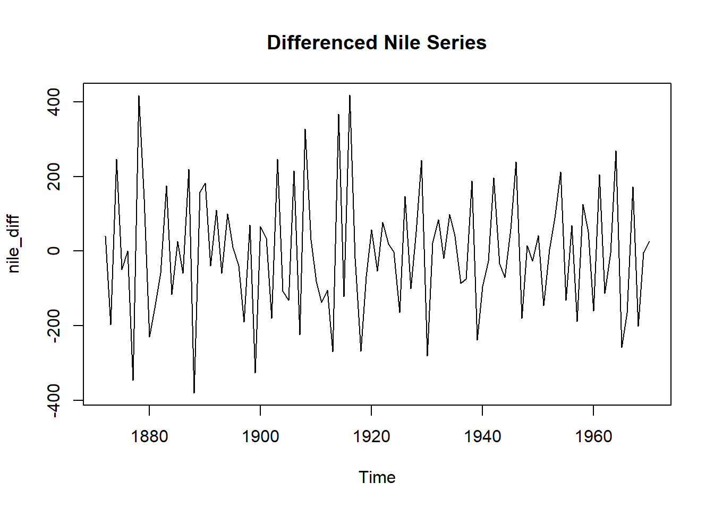
Augmented Dickey-Fuller Test
data: nile_diff
Dickey-Fuller = -6.5924, Lag order = 4, p-value = 0.01
alternative hypothesis: stationaryWe see that the p-value is very small now and now we can confidently reject the null hypothesis and conclude that the Nile dataset is now statioanry after differencing. Differencing helps because it removes persistent changes in the level of the series.
ACF and PACF
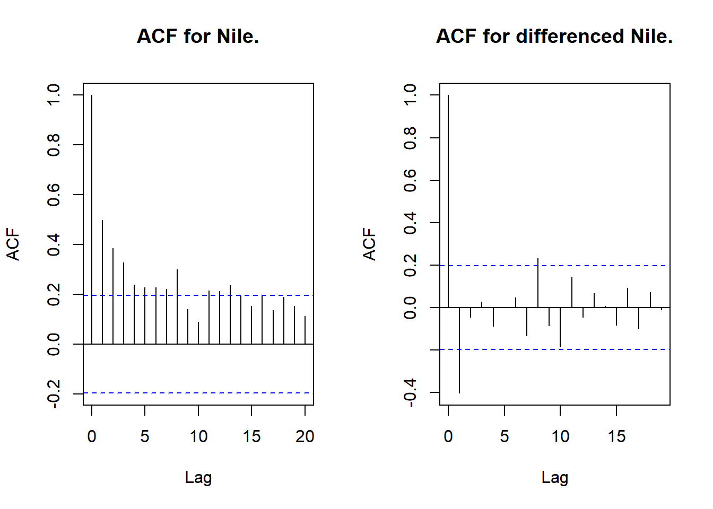
The original Nile series shows persistent positive autocorrelation across many lags, suggesting non-stationarity. After first differencing, the autocorrelations decay much more rapidly and most lie within the 95% confidence bounds, indicating that differencing has made the series substantially more stationary. However, the significant negative autocorrelation at lag 1 suggests that some short-run dependence remains.
A slowly declining ACF often suggests an AR(p) model but we can only be sure by comparing the PACF plot with the ACF plot.
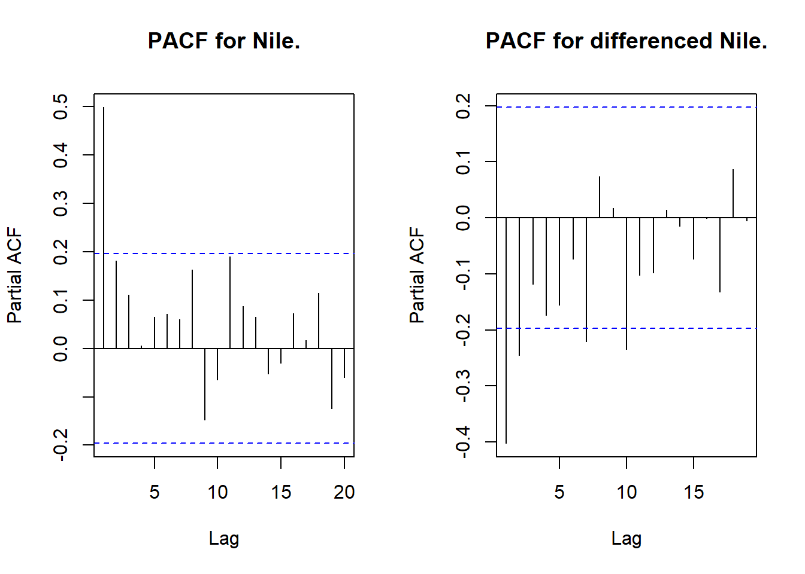
The PACF for the original Nile series has a large spike at lag 1 and then decays quickly, indicating strong first-order dependence. After first differencing, most partial autocorrelations are relatively small, although a few lags remain significant. This suggests that differencing has removed much of the persistence, while some short-term dependence remains. The presence of a few significant PACF spikes does not necessarily indicate that further differencing is required, and additional differencing should be avoided unless there is stronger evidence of remaining non-stationarity.
AR Models
Simulated AR(1):
\(Y_t = 0.7Y_{t-1} + \epsilon_t\)
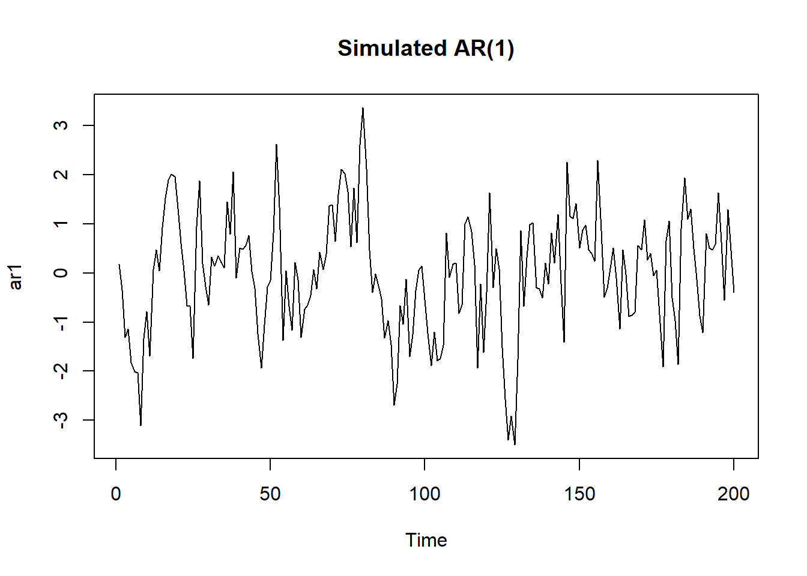
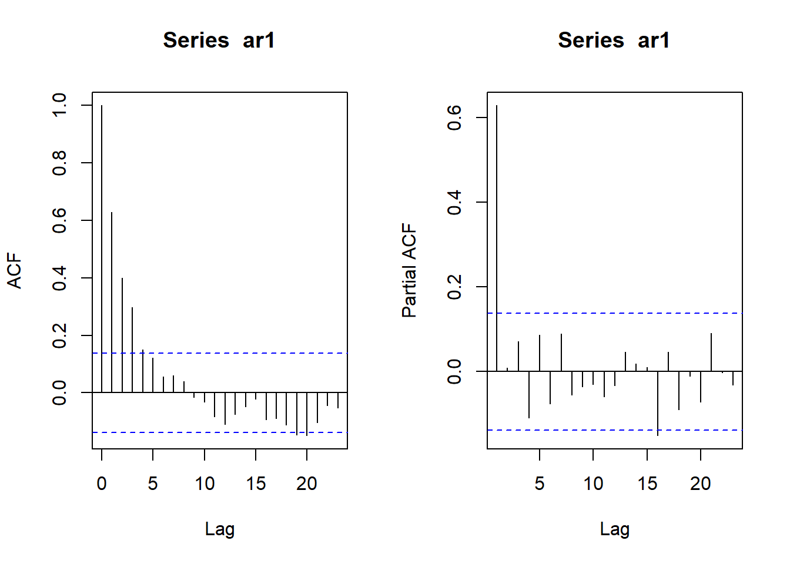
Here we observe the expected behaviour for AR models: The ACF plot shows the slower decay while the PACF plot shows a drastic decline from the first lag.
Fit an AR(1):
Call:
arima(x = ar1, order = c(1, 0, 0))
Coefficients:
ar1 intercept
0.6260 -0.0157
s.e. 0.0546 0.1753
sigma^2 estimated as 0.8742: log likelihood = -270.59, aic = 547.18Here we set ARIMA(1, 0, 0) so the d and q terms are zero which means that this is an AR(1) process.
Simulated AR(2):
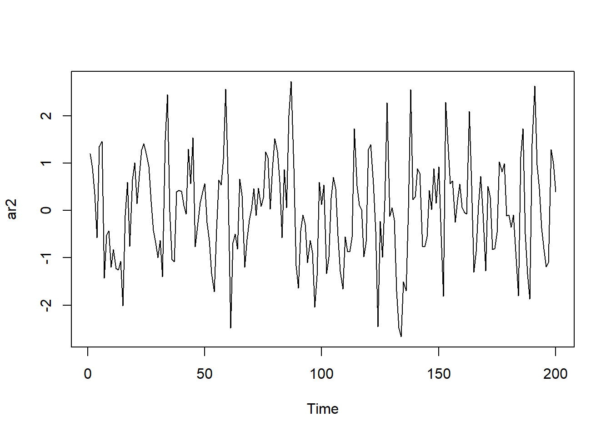
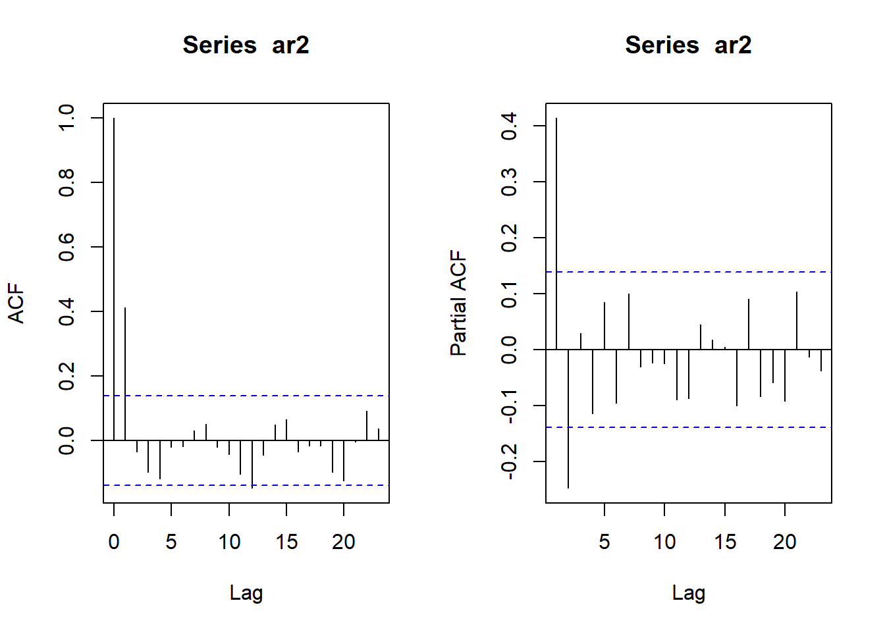
Here the PACF shows stronger behaviour around the first two lags since we are working with an AR(2) model.
Call:
arima(x = ar2, order = c(2, 0, 0))
Coefficients:
ar1 ar2 intercept
0.5159 -0.2458 0.0018
s.e. 0.0685 0.0686 0.0913
sigma^2 estimated as 0.8885: log likelihood = -272.12, aic = 552.23ARMA(2, 0, 0) = AR(2)
MA models
Simulate an MA(1) model:
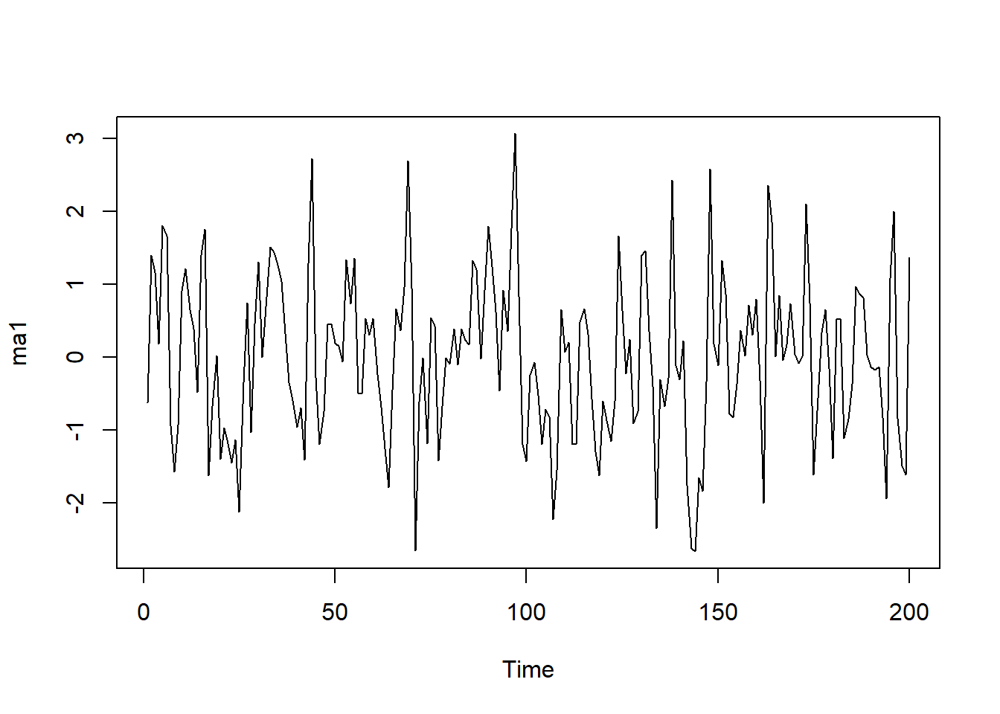
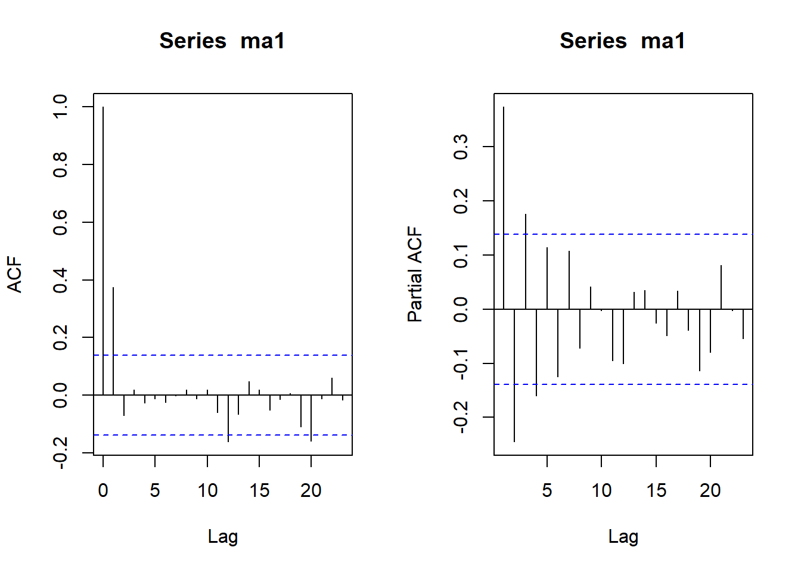
The ACF has a significant spike at lag 1 and then cuts off, while the PACF decays more gradually. This is the expected pattern for an MA(1) model.
Call:
arima(x = ma1, order = c(0, 0, 1))
Coefficients:
ma1 intercept
0.7970 0.0045
s.e. 0.0621 0.1202
sigma^2 estimated as 0.8991: log likelihood = -273.65, aic = 553.31ARIMA(0, 0, 1) = MA(1)
Comparing AR and MA
| Model | ACF | PACF |
|---|---|---|
| AR(p) | tails off | cuts off after p |
| MA(q) | cuts off after q | tails off |
| ARMA(p, q) | tails off | tails off |
PACF helps identify AR order p and ACF helps identify MA order q.
ARMA models
\(Y_t = c + \phi Y_{t-1}+\varepsilon_t + \theta \varepsilon_{t-1}\) is an ARMA(1, 1).
We will now simulate ARMA(1, 1):
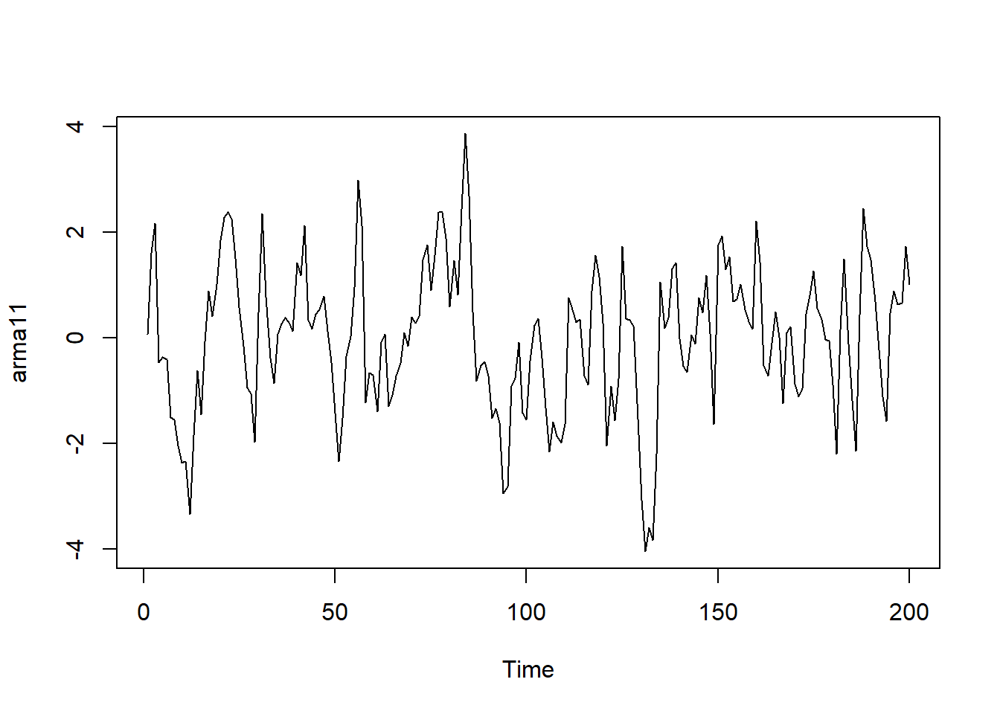
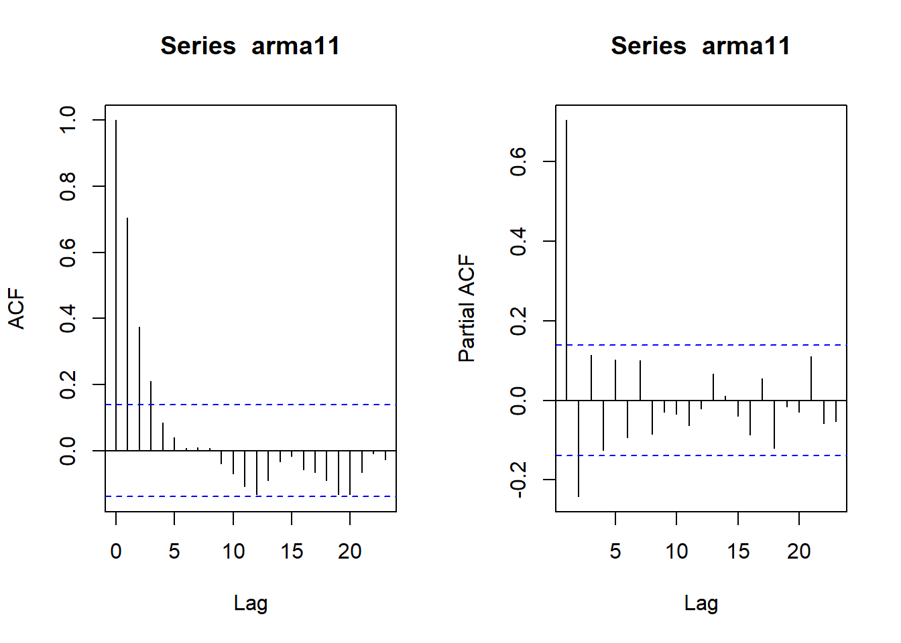
Neither really has a nice cutoff.
Call:
arima(x = arma11, order = c(1, 0, 1))
Coefficients:
ar1 ma1 intercept
0.4527 0.5079 -0.0027
s.e. 0.0941 0.1093 0.1820
sigma^2 estimated as 0.8831: log likelihood = -271.82, aic = 551.64ARIMA(1, 0, 1) = ARMA(1, 1)
ARIMA models
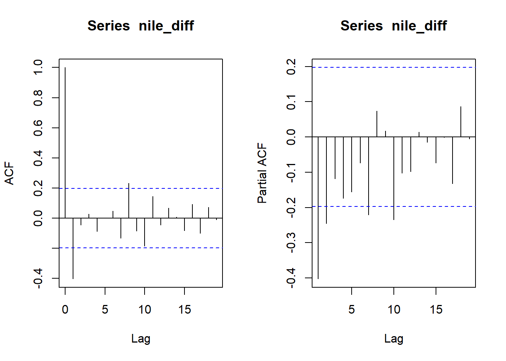
We can use the auto model fit function
Series: Nile
ARIMA(1,1,1)
Coefficients:
ar1 ma1
0.2544 -0.8741
s.e. 0.1194 0.0605
sigma^2 = 20177: log likelihood = -630.63
AIC=1267.25 AICc=1267.51 BIC=1275.04Fit our own model
Series: Nile
ARIMA(1,1,0)
Coefficients:
ar1
-0.3975
s.e. 0.0915
sigma^2 = 23727: log likelihood = -638.74
AIC=1281.48 AICc=1281.61 BIC=1286.67This means ARIMA(1, 1, 0), which translates to an AR(1) type structure with differencing.
Forecasting
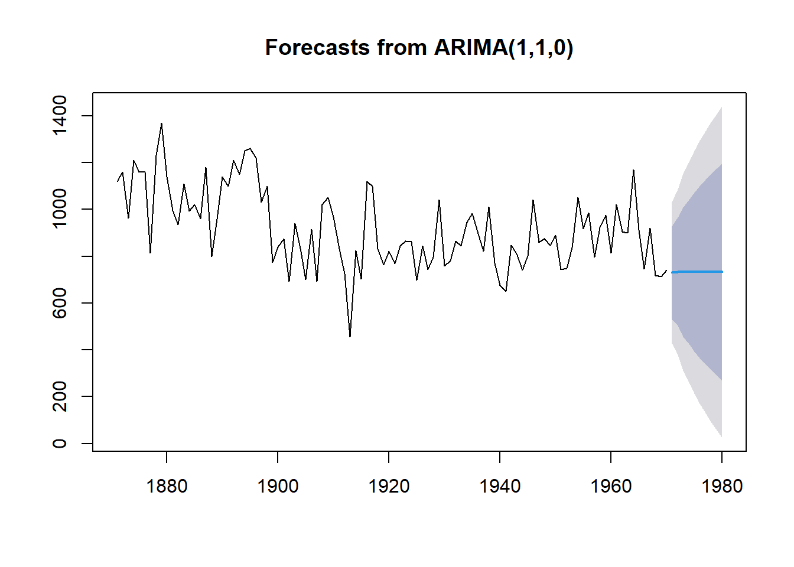
Residual Diagnostics
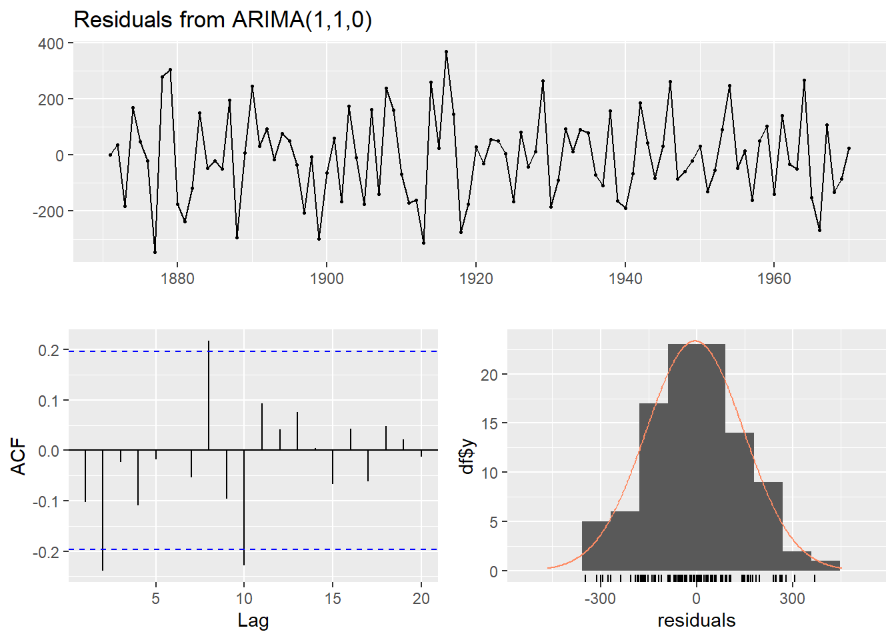
Ljung-Box test
data: Residuals from ARIMA(1,1,0)
Q* = 20.804, df = 9, p-value = 0.01355
Model df: 1. Total lags used: 10Residual diagnostics for the ARIMA(1,1,0) model show that the residuals are centred around zero and appear approximately normally distributed. Most residual autocorrelations lie within the 95% confidence bounds, although a few significant spikes remain. Furthermore, the Ljung–Box test gives a p-value of 0.01355, which is below 0.05. We therefore reject the null hypothesis of uncorrelated residuals. This suggests that the residuals are not completely white noise and that the ARIMA(1,1,0) model may not have captured all of the dependence in the Nile series. Alternative specifications such as ARIMA(0,1,1) or ARIMA(1,1,1) could therefore be considered and compared.
Seasonal Data
[1] 12The seasonal period is 12.
Seasonal differencing
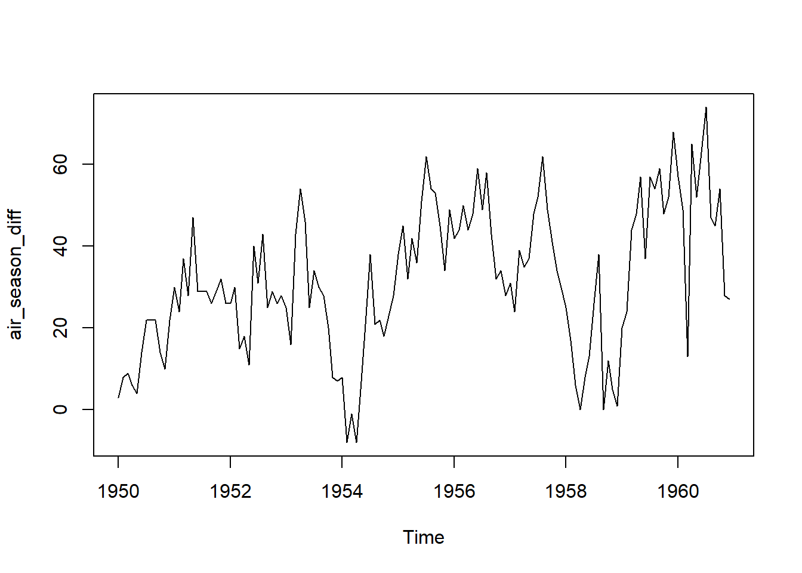
SARIMA models
Written as \(SARIMA(p, d, q)(P, D, Q)_s\)
Series: AirPassengers
ARIMA(1,1,1)(1,1,1)[12]
Coefficients:
ar1 ma1 sar1 sma1
-0.1387 -0.2027 -0.9228 0.8329
s.e. 0.5860 0.6123 0.2386 0.3519
sigma^2 = 135: log likelihood = -506.15
AIC=1022.3 AICc=1022.78 BIC=1036.68This is \(SARIMA(1, 1, 1)(1, 1, 1)_{12}\)
The first \((1, 1, 1)\) describes the short-term behaviour and the second \((1, 1, 1)_{12}\) describes the yearly seasonal behaviour.
Seasonal ACF and PACF:
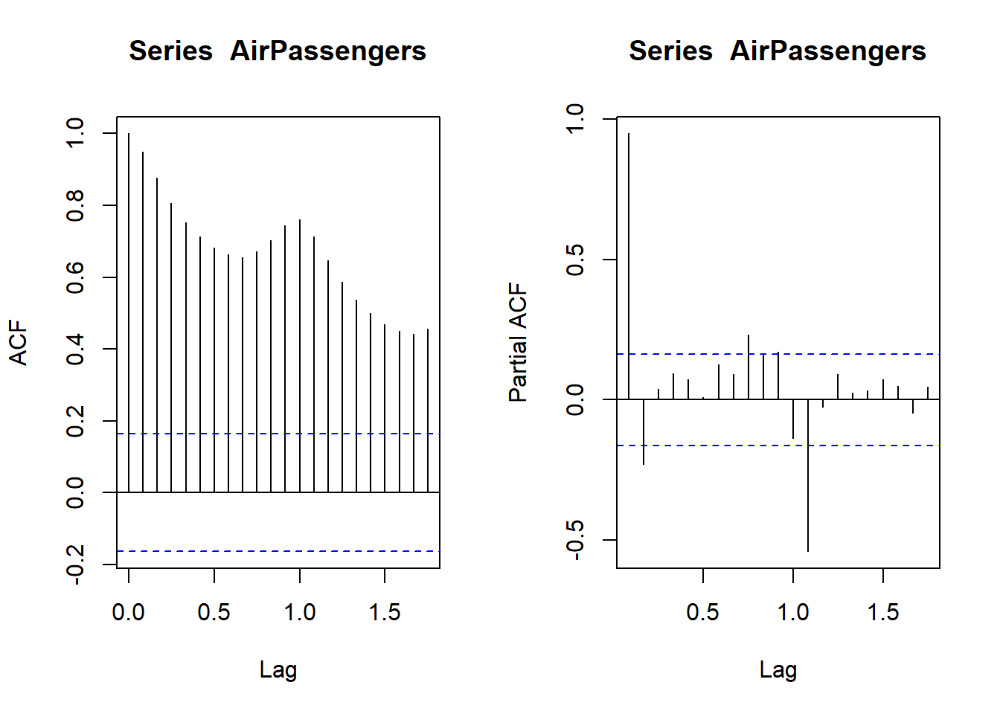
There is some pattern around the seasonal lags (every 12 lags).
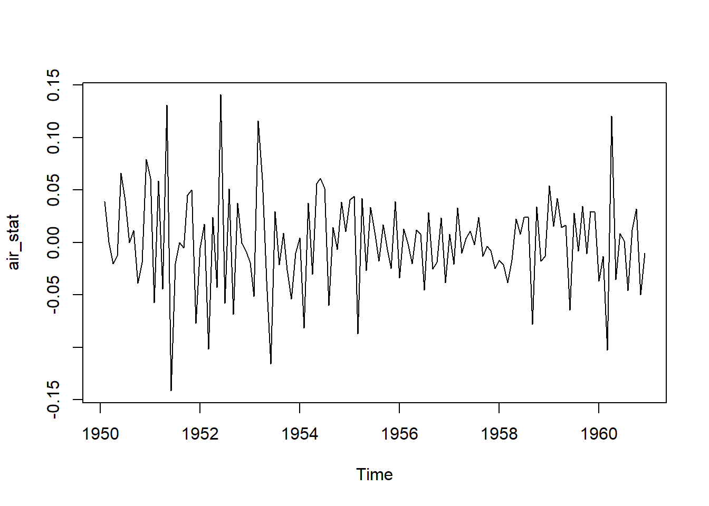
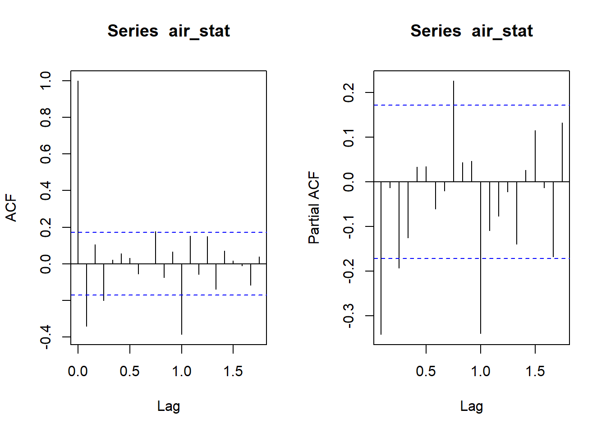
These are much more useful for identifying a SARIMA structure because we’ve removed much of the trend and seasonality.
Automatic SARIMA selection
Series: AirPassengers
ARIMA(2,1,1)(0,1,0)[12]
Coefficients:
ar1 ar2 ma1
0.5960 0.2143 -0.9819
s.e. 0.0888 0.0880 0.0292
sigma^2 = 132.3: log likelihood = -504.92
AIC=1017.85 AICc=1018.17 BIC=1029.35
Training set error measures:
ME RMSE MAE MPE MAPE MASE ACF1
Training set 1.3423 10.84619 7.86754 0.420698 2.800458 0.245628 -0.00124847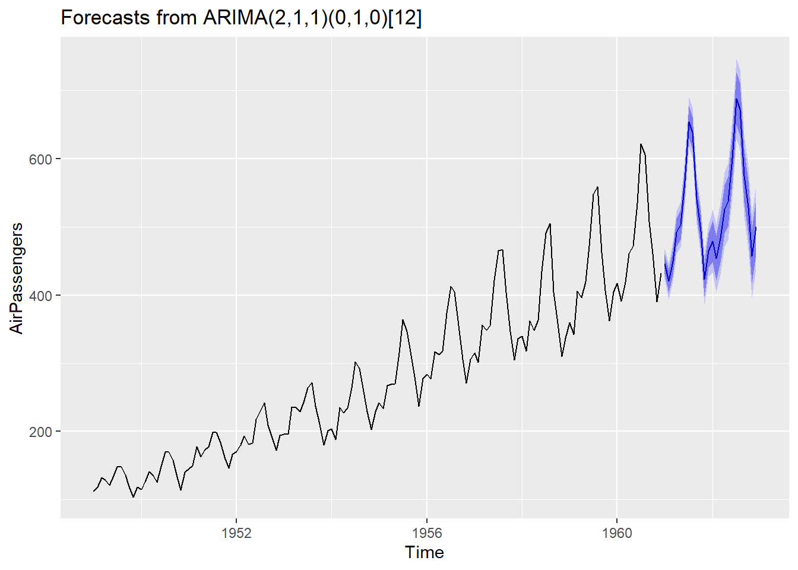
Here we can forecast the following 24 months.
Compare candidate models
df AIC
model1 2 1281.480
model2 2 1269.091
model3 3 1267.255
Ljung-Box test
data: Residuals from ARIMA(1,1,0)
Q* = 20.804, df = 9, p-value = 0.01355
Model df: 1. Total lags used: 10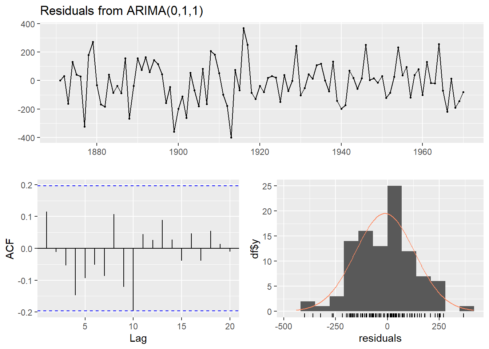
Ljung-Box test
data: Residuals from ARIMA(0,1,1)
Q* = 13.387, df = 9, p-value = 0.1458
Model df: 1. Total lags used: 10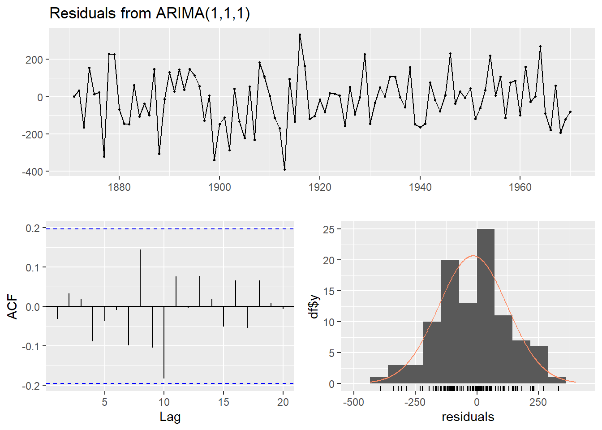
Ljung-Box test
data: Residuals from ARIMA(1,1,1)
Q* = 9.7056, df = 8, p-value = 0.2863
Model df: 2. Total lags used: 10| Model | AIC | Ljung-box p-value | Residual Conclusion |
|---|---|---|---|
| ARIMA(1, 1, 0) | 1281.480 | 0.01355 | Residual autocorrelation remains. |
| ARIMA(0, 1, 1) | 1269.091 | 0.1458 | Residuals reasonably white noise. |
| ARIMA(1, 1, 1) | 1267.255 | 0.2863 | Residuals the most consistent with white noise. |
Among the three candidate models, ARIMA(1,1,1) appears to be the most suitable. It has the lowest AIC of 1267.255, indicating the best trade-off between model fit and complexity. Its Ljung–Box test also produces a p-value of 0.2863, so we fail to reject the null hypothesis that the residuals are uncorrelated. The residual ACF supports this conclusion, as the residual autocorrelations are largely contained within the 95% confidence bounds. ARIMA(0,1,1) is also reasonable, with a Ljung–Box p-value of 0.1458, but it has a slightly higher AIC. In contrast, ARIMA(1,1,0) has both the highest AIC and a significant Ljung–Box test, suggesting remaining autocorrelation. Therefore, ARIMA(1,1,1) would be preferred among these candidate models.
To ensure that the ARIMA(1,1,1) model is the better model we will also check whether its coefficients are statistically meaningful compared to the ARIMA(0,1,1).
estimate se z p_value
ar1 0.2543714 0.1193960 2.130484 0.03313164
ma1 -0.8741364 0.0604818 -14.452883 0.00000000Both of the coefficients are meaningful, so therefore the ARIMA(1,1,1) model is the most suitable among these three model.
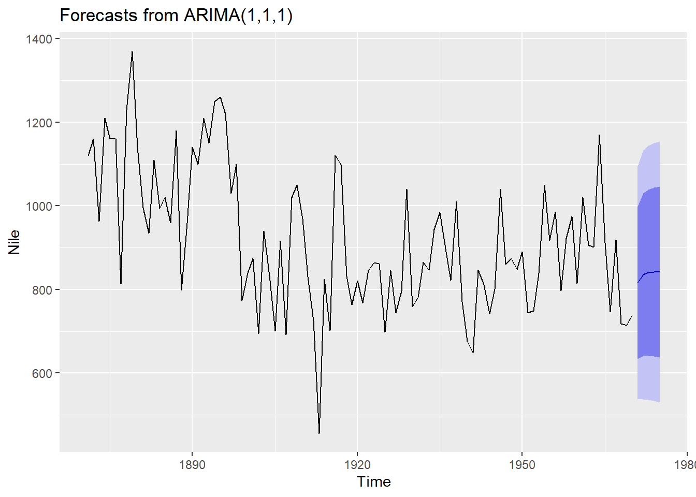